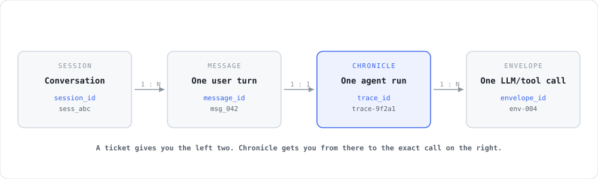
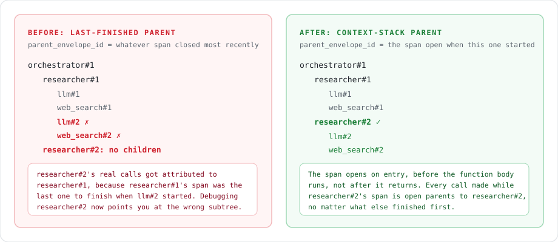
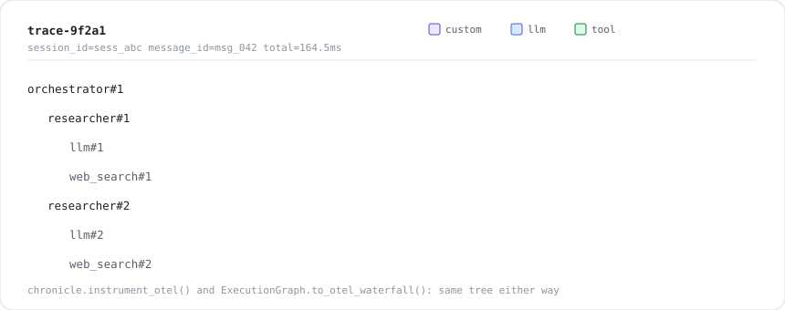

It's Tuesday. Someone on support forwards you a message: "priya@acmecorp.com says the assistant told her something false, sometime yesterday afternoon." No conversation id. No message id. Just a name and a rough window of time. Maybe it's quieter than that: a thumbs-down on your own feedback button, or an alert your monitoring auto-files. Either way, what lands on your desk is never "here is the broken function." At best, it's a person and roughly when.
Your agent, meanwhile, is not one function call. A single user message might fan out into an orchestrator calling a researcher, which calls a model, which calls a search tool, twice, with a retry in the middle. That one bad reply the user saw was produced by one specific call, three levels deep, somewhere inside a tree of a dozen calls made sometime in a two-hour window. You have a name and a time range. You need a call stack.
This post closes that gap, from first principles, with the actual mechanism, not a hand-wave. By the end you'll know how to go from "a name and roughly when" down to a session, a message, and the exact call that misfired; the specific attribution bug that quietly breaks naive tracing in any system with parallel or repeated sub-agents (you have this bug right now if you haven't specifically fixed it); and the one-line change that fixes it, drawn from Chronicle (chronicle#41, open for review as we write this).
First principles: the four IDs
Before you can go from "a name and roughly when" to "here's the exact call that misfired," you need to know what identifies what, and where you actually start. There are four levels, and conflating any two of them is where most homegrown tracing setups go wrong.

- Session (
session_id). One conversation. A user might send you ten messages over an hour; they all share one session. - Message. One user turn inside that session. This is what a precise bug report gives you, when you're lucky enough to get one: "in this message, the agent said something wrong."
- Trace (
trace_id). One agent run. In practice, one message turn produces one trace: the user sends a message, the agent does whatever it does (one call or twenty), and produces a reply. - Envelope (
envelope_id, OTel calls it a span). One LLM call, one tool call, or one routing decision inside that run. A trace is an ordered tree of these.
Resolving "yesterday afternoon" into a session_id is ordinary application code, not Chronicle's job: look up the account, find the sessions active in that window. Chronicle's job starts once you have that session_id. Single-shot service-to-service calls collapse the next two (no multi-turn session, just a session_id and maybe a caller_id). Multi-turn chat keeps session_id constant across the conversation and mints a new message_id (and a new trace_id) on every turn. Either way, the shape is the same: you start with almost nothing, resolve down to a session and a message, and Chronicle gets you the rest of the way to the exact call.
This is exactly the mapping problem we'd sketched out on a whiteboard before writing a line of code: name and time → session → message → trace, with the open question of how you ever get from "roughly yesterday afternoon" to "the actual execution graph." The rest of this post is the answer.
Why "just add tracing" doesn't get you there
Say you've done the obvious thing: wrapped your LLM and tool calls so each one records an envelope with a parent_envelope_id, and you build a tree out of that after the fact. This works in every demo. It works in your first three fixtures. Then it breaks silently, on the one trace you actually needed, because you have two branches of the same shape running in the same trace, which in a multi-agent system is the common case, not the edge case.
And if you already run OpenTelemetry against this agent, you are not exempt. The failure mode here isn't "we have no tracing." It's "our tracing is confidently wrong," which is worse, because a tree that renders cleanly is a tree you trust. You stop looking anywhere else. You spend the debugging session inside the wrong subtree, close the ticket with a fix that doesn't touch the actual bug, and it comes back a week later with a slightly different repro.
Here's the concrete scenario: an orchestrator calls the same sub-agent twice, once per source it needs to research. Each call does an LLM planning step and a tool call:
from chronicle import boundary
@boundary("planner", kind="llm")
def planner(task: str) -> dict:
...
@boundary("web_search", kind="tool")
def web_search(query: str) -> dict:
...
def researcher(task: str) -> dict: # plain code, not a boundary
plan = planner(task)
return web_search(plan["query"])
def orchestrator(task: str) -> dict: # plain code, not a boundary
first = researcher(task + " (source A)")
second = researcher(task + " (source B)")
return [first, second]Notice researcher and orchestrator aren't boundaries themselves. That's deliberate: you mark decision nodes (an LLM call, a tool call, a routing choice), not the whole call stack. This keeps recording overhead near zero and keeps your orchestration as plain code Chronicle never has to know about. The question is how those decision nodes learn who their parent is if nobody wrapped researcher or orchestrator.
The naive answer is "attribute a new envelope to whichever envelope finished most recently." It's the simplest thing that could work, and it's wrong the moment two sibling subtrees are in flight or interleaved:

When researcher's second call starts its planner call, the "most recently finished" envelope is web_search#1 from the first call, not anything belonging to the second researcher. The tree you reconstruct silently welds the second research branch onto the first one. You go looking for why researcher #2 produced a bad answer, and every log line in front of you belongs to researcher #1. Nothing crashes. Nothing throws. The trace just quietly points you at the wrong code for an hour.
The fix: open the span before the body runs
The fix is one sentence: a boundary opens its span when it's entered, before the wrapped function runs, not after it returns. That single change is the difference between "attribute by whatever happened to finish last" and "attribute by what's actually on the call stack right now," and that is precisely what OpenTelemetry's Context does, and precisely what was missing.
# Simplified: what @boundary now does around your function
span_id, parent_id = session.start_span() # push onto the active-span stack
try:
result = fn(*args, **kwargs) # anything this calls sees `span_id` as parent
finally:
session.end_span() # pop back to the caller's spanBecause start_span() runs before fn, any boundary invoked while this one is still on the stack correctly parents to it, no matter what else happens to finish in between. Rerun the two-branch scenario above and the tree comes out right every time, regardless of timing:

Trace: trace-9f2a1
total: 164.5ms resource/dims: message_id=msg_042 session_id=sess_abc
orchestrator#1 ████████████████████████████████████████████ 164.5ms custom
researcher#1 ██████████████████████ 74.8ms custom
llm#1 ██████████████ 42.3ms llm
web_search#1 ██████████ 31.7ms tool
researcher#2 ████████████████████ 72.3ms custom
llm#2 ████████████ 40.5ms llm
web_search#2 ██████ 30.9ms toolThis is what graph.to_otel_waterfall() prints (there's also graph.to_otel_tree(), which prints the same tree as indented lines instead of a timeline). Both are debug helpers you run locally or pipe into a log line, not a hosted product; if you want a shared dashboard your whole team browses, that's a separate concern from what a recording library should own.
The other half: getting session_id and message_id onto the trace
Correct nesting gets you a trustworthy tree once you're looking at the right trace. It doesn't yet tell you which trace, out of everything your agent ran today. For that, Chronicle added dims: a flat dict[str, str] you pass once, that gets copied onto every envelope in the run.
import chronicle
with chronicle.record(
"trace-9f2a1",
store=".chronicle/runs/prod.jsonl",
dims={
"session_id": "sess_abc", # constant for the whole conversation
"message_id": "msg_042", # new value every turn
},
):
orchestrator(user_message)That's it. Chronicle doesn't store your chat history and doesn't own a "look up trace by message ID" index; that's a product concern for whatever's on the other end (your logging pipeline, your control plane, a support tool). We're building a complementing dashboard for exactly this lookup next (more on that in a future post). Until then, what Chronicle guarantees is that once you have a session_id and a message_id, every envelope in the matching trace carries them, so any store you point it at can build that index trivially: grep, a SQL WHERE, or a dashboard query, your choice.
Try it yourself
pip install agent-chronicleMark your decision nodes. Wrap the LLM calls, tool calls, and routing choices you'd actually want to assert on in a test, not the whole orchestrator function.
from chronicle import boundary @boundary("planner", kind="llm") def planner(task: str) -> dict: ... @boundary("web_search", kind="tool") def web_search(query: str) -> dict: ...Record a run with the ids you'll get back from a ticket.
import chronicle with chronicle.record( "trace-9f2a1", store=".chronicle/runs/prod.jsonl", dims={"session_id": "sess_abc", "message_id": "msg_042"}, ) as session: orchestrator(user_message)When a ticket comes in, pull the trace and print the tree.
graph = chronicle.ExecutionGraph.from_envelopes(session.trace_id, session.envelopes) print(graph.to_otel_waterfall())Turn the bad run into a regression test. Add
export="fixtures/traces/incident-001/"to therecord(...)call and the exact trace gets committed to git as a fixture. Replay it (chronicle.replay_trace) with your fix applied and no live model calls, so "did this actually fix it" becomes a test you run in CI, not a hope.
If your agent is instrumented with OpenTelemetry already, chronicle.instrument_otel() emits the same nested spans to your existing collector (pip install agent-chronicle[otel]), so this isn't an either/or with the observability stack you already run.
What this doesn't solve, on purpose
We'd rather tell you the edges than let you find them the hard way:
- Chronicle doesn't store your session or message history. It stamps the ids you give it onto envelopes. Owning "what messages exist in this session" is your app's job, not a recording library's.
- There's no hosted lookup UI yet.
to_otel_tree()/to_otel_waterfall()are local debug output. A dashboard where a support ticket resolves straight to a trace view is a control-plane concern we're building next, not something bolted into this library. - Replay proves control flow, not answer quality. Replaying a trace with your fix tells you the agent takes the right path and calls the right tools with the right arguments, deterministically, with no live model calls. It won't tell you a subjectively "better" answer is actually better; that's a model-quality eval, a different tool for a different question.
If this is a problem you have
Star theagentplane/chronicle if this is useful. It's the fastest way to tell us to keep going, and it's genuinely how a two-person OSS project gets found by the next person with this exact problem. Try it on one flaky agent, tell us where the API gets in your way, or open an issue with the trace that broke you. We're building this in public specifically so the next fix is shaped by a real incident, not a guess.